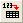
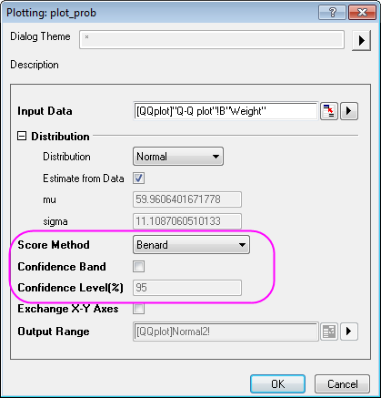

Q-Q-Diagramm
Q-Q-Plot
Zusammenfassung
Das Q-Q-Diagramm ist eine weitere grafische Methode, um zu testen, ob ein Datensatz einer gegebenen Verteilung folgt. Das Q-Q-Diagramm hat unabhängige Werte auf der X-Achse und unabhängige Werte auf der Y-Achse. Wenn alle gezeichneten Punkte nah an der Referenzlinie liegen, kann davon gesprochen werden, dass der Datensatz der gegebenen Verteilung folgt.
Origin-Version mind. erforderlich: Origin 2016 SR0
Was Sie lernen werden
- ein Q-Q-Diagramm für normalverteilte Daten erstellen.
- einen vermutlichen Ausreißer in den Quelldaten maskieren und das Q-Q-Diagramm neu berechnen.
Q-Q-Diagramm erstellen
Sie können dieses Diagramm auch im Lernzentrum finden. (Wählen Sie Hilfe: Lernzentrum im Menü oder drücken Sie die Taste F11. Öffnen Sie dann Diagrammbeispiel: Statistikdiagramme.)
- Klicken Sie auf die Schaltfläche , um die Datei Q-Q plot.dat im Verzeichnis <Origin>\Samples\Graphing\ zu importieren.
- Aktivieren Sie das Arbeitsblatt Q-Q plot in der Arbeitsmappe QQplot, markieren Sie Spalte B, klicken Sie mit der rechten Maustaste und wählen Sie im Kontextmenü Zeichnen: Statistisch: Q-Q-Diagramm. Stellen Sie sicher, dass im Dialog Plotting:plot_prob die Auswahlliste Score-Methode auf Benard gesetzt ist. Klicken Sie auf OK.

- Klicken Sie zum Öffnen des Dialogs Details Zeichnung doppelt auf die untere Perzentillinie. Gehen Sie zur Registerkarte Linie, setzen Sie die Farbe auf Rot und die Transparenz auf 80%. Aktivieren Sie dann das Kontrollkästchen Fläche unter Kurve füllen und wählen Sie Bis zur nächsten Datenzeichnung füllen - Eine Farbe in der Auswahlliste unten.
- Gehen Sie zur Registerkarte Muster und setzen Sie die Füllfarbe auf Rot. Stellen Sie sicher, dass das Kontrollkästchen Linientransparenz folgen aktiviert ist.
- Gehen Sie zur Registerkarte Linie der oberen Perzentillinie und setzen Sie die Farbe auf Rot und die Transparenz auf 80%. Klicken Sie auf OK, um die Einstellung anzuwenden, und schließen Sie den Dialog.
Das Diagramm sollte folgendermaßen aussehen:
Vermutlichen Ausreißer maskieren
- Klicken Sie auf das grüne Schloss, um sicherzustellen, dass Modus Neuberechnung auf Auto gesetzt ist.
- Klicken Sie auf das Hilfsmittel Datenleser und dann auf die verdächtigen Datenpunkte im Q-Q-Diagramm.


Das Fenster Dateninfo zeigt den Wert des Ausreißerpunkts.
- Aktivieren Sie das Arbeitsblatt Q-Q plot und markieren Sie Spalte B.
- Klicken Sie im Menü auf Fenster: Befehlsfenster und geben Sie in der Eingabeaufforderung das unten gezeigte Skript ein.
colmask cond:=eq val:=x;
Der Ausreißerpunkt wird in rot im Arbeitsblatt Q-Q plot gezeigt. Er wird nicht in dem Diagramm berücksichtigt.